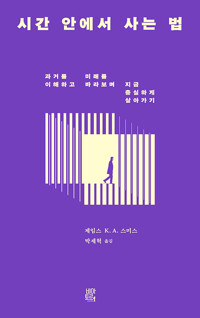

『시간 안에서 사는 법』의 서문과 도입부만 읽고 모인 첫 회, '책이 어렵다'는 고백이 곳곳에서 터져 나온 날이었다. 그러나 아침 큐티 본문과 책의 시간론이 신기하게 하나로 겹쳐진다는 첫 나눔이 물꼬를 트자, 처음 온 손님이 내놓은 원샷과 풀샷, 드론의 비유가 그날의 공용어가 됐다. 시간을 내 것처럼 쪼개 살던 날들, 기도 없이 지나온 결정들, 무너진 지체를 붙든 공동체의 기적까지 고백이 릴레이처럼 이어졌고, 진행자는 과거는 믿음으로 미래는 소망으로 맡기고 오늘은 사랑하라는 시간론으로 뼈대를 세운 뒤 다음 모임까지 책 전체를 정리해 오겠다고 약속했다. 손님으로 온 한 목회자가 자신의 생애를 드론 띄우듯 돌아본 나눔과 축복 기도로 모임이 닫혔다.
큐티와 책이 하나로 겹쳐질 때
모임은 한 참석자의 상기된 고백으로 시작됐다. 인생이 빨리 끝났으면 좋겠다는 마음으로 살아온 지난 시간을 돌아보게 됐다는 그는, 그날 아침 큐티 본문의 풍랑 이야기가 책의 시간론과 신기하리만치 하나로 맞물렸다고 했다. 하나님이 풍랑을 일으켜 혼란 가운데 당신의 크심을 보게 하시고, 나약함을 인정하며 부르짖는 자를 잠잠케 하여 원하는 항구까지 인도하신다는 것. 원망하고 불평하던 자리에서 하나님이 어떤 분이신지 깨달아가는 과정이 곧 인생이며, 힘들었던 시간마저 하나님이 귀하게 쓰실 것을 기대하니 소망으로 살 수 있겠다는 말이었다. 이후 이어진 거의 모든 나눔이 큐티와 책이 같이 간다는 이 첫 화두를 저마다의 방식으로 변주했다.
원샷과 풀샷 — 드론을 띄우는 신앙
그날 처음 자리한 한 손님은 책을 읽지 못하고 왔다며 자신을 줄 없는 테니스 라켓에 빗대 웃음을 줬지만, 정작 그날의 언어가 된 비유를 내놓은 사람이 그였다. 한 피사체를 가득 담는 원샷과 멀리서 조망하는 풀샷의 차이처럼, 우리는 날마다 눈앞의 문제와 사투를 벌이는 원샷의 삶을 살지만 가끔 드론을 띄워 넓은 시야로 보면 끊어질 듯 아슬아슬한 다리 건너에 빛나는 성이 있고, 풍랑 이는 바다 건너에 하나님이 약속하신 땅이 있다는 것이다. 그 프레임의 전환이야말로 신앙인과 그렇지 않은 사람의 관점 차이가 아니겠느냐는 이 비유는 이후 모임 내내 '드론을 띄운다'는 말로 되돌아왔다.
단 한 번의 생애 — 골짜기에 새기시는 하나님
진행자는 윤회를 말하는 세계관과 달리 성경은 단 한 번의 생애를 주셨기에, 지금 이 순간을 성경만큼 무겁게 여기는 세계관이 없다고 짚었다. 폭삭 늙어버리는 고생의 시간은 누구나 잘라내 버리고 싶어 하지만, 시간 바깥에 계셔서 과거와 현재와 미래를 한 번에 관통해 보시는 하나님은 바로 그 골짜기에서 우리를 하나의 작품으로 새기고 계신다는 것이다. 특정한 각도에 서야 비로소 글자가 읽히는 조형물처럼, 어느 세계관에 서느냐에 따라 같은 시간이 헛된 고생으로만 보이기도 하고 하나님의 조각으로 보이기도 한다는 말에, 참석자들은 각자의 힘들었던 시절을 겹쳐 들었다. 진행자 자신도 진리에 섰다가 세상에 섰다가 오간다는 솔직한 토로가 곁들여져 더 가깝게 들린 대목이었다.

과거는 믿음으로, 미래는 소망으로, 오늘은 사랑으로
믿음·소망·사랑 중 왜 제일이 사랑인지에 대한 진행자의 풀이가 이날의 뼈대가 됐다. 지나온 모든 시간은 주님이 하셨음을 믿는 것이 믿음이고, 내일부터의 삶을 주님이 책임지신다는 것이 소망이라면, 내게 남은 유일한 몫은 지금 이 시간 사랑하는 일뿐이라는 것이다. 하나님은 인간의 자유의지를 건드리지 않으시니 그 자유를 사랑하는 데 쓰라는 말, 하나님을 사랑하면 잘나가는 사람 대신 하나님이 바라보고 계신 사람이 보이기 시작한다는 말이 이어졌다. 삶의 끝자락에 선 사람들이 정작 무엇을 후회하는지에 대한 이야기는 이 진리를 가장 실감 나게 만든 대목이었다.
시간의 주인을 모른 척하며 산 날들 — 고백의 릴레이
이후 참석자들의 고백이 릴레이처럼 이어졌다. 한 참석자는 시간을 내 것인 양 뼈를 갈아 살아왔지만 정작 하나님은 시험과 취직을 비는 요술램프처럼 필요할 때만 꺼내 썼다며, 기도 없이 결혼을 결정했던 일을 낯선 청년의 질문 앞에서 처음으로 부끄럽게 마주한 이야기를 들려줬다. 고등학생 딸을 다그치던 자신이 실은 오랜 세월에 걸쳐 빚어진 남편의 완성형을 어린 아이에게 요구하고 있었다는 깨달음도 보탰다.
다른 참석자는 잠을 아껴가며 사람들을 만나는 바쁜 일상 속에서, 무너져 온 지체를 온 공동체가 붙들고 기도와 작은 손길로 함께 견뎌 회복되는 기적을 보는 것이 기쁨이라 했다. 첫 나눔을 열었던 참석자는 힘든 사람을 만나면 하루 종일 마음이 무너지는 자신과 참 다르다며 그 기질을 부러워했고, 모임은 서로 다른 달란트로 일하시는 하나님을 확인했다. 시간을 30분 단위로 쪼개 살던 또 다른 참석자는 훈련 과정에서 쉬어도 된다는 말을 거듭 들으며 나 없이도 하나님의 일은 돌아간다는 자유를 배웠다고, 갑작스러운 상실을 겪은 지체를 위해 기도하며 하나님의 새 계획을 신뢰하게 됐다고 나눴다.
어려운 책과 씨름하기 — 네가 소망하는 것이 곧 너다
이 책이 어렵다는 고백은 이날의 공용어이기도 했다. 한 참석자는 철학적인 문장마다 막혀 한 바퀴 읽고 되돌아가기를 거듭했다면서도, 미래가 현재로 스며든다는 대목과 숨 쉬는 한 소망한다는 라틴어 문구를 붙들고, 부르심 안에서 오늘 하루를 어떻게 살아낼 것인가라는 물음까지 자기 언어로 밀고 나갔다. 진행자는 그것이 문해력의 문제가 아니라며, 네가 사랑하는 것 네가 소망하는 것이 곧 너라는 저자의 오랜 사상이 시간이라는 옷을 입고 온 책이라고 정리했고, 자신도 세 번째 읽는 중이라는 고백과 함께 다음 모임까지 전체를 정리해 오겠다고 약속했다.
마지막으로 처음 자리한 손님이 마이크를 받았다. 젊은 날의 큰 상실에서 시작해 목회자의 길로 들어섰고, 원대한 꿈이 번번이 정반대로 꺾이는 것 같았지만 드론을 띄우듯 돌아보면 그 모든 계기에 이유가 있어 낮은 곳으로 인도받아 왔다는 생애의 나눔이었다. 그는 '같다'는 한 단어가 과거에 붙어도 현재에 붙어도 미래에 붙어도 똑같다는 데서 하나님의 신실하심을 읽어냈고, 모든 시간을 주관하시는 하나님의 완전한 계획을 구하는 축복 기도로 첫 모임을 닫았다.